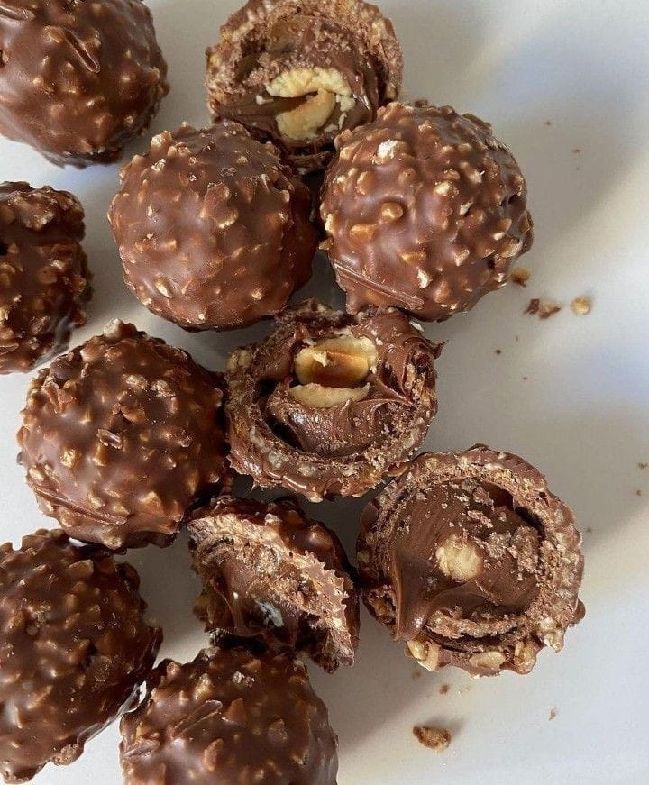
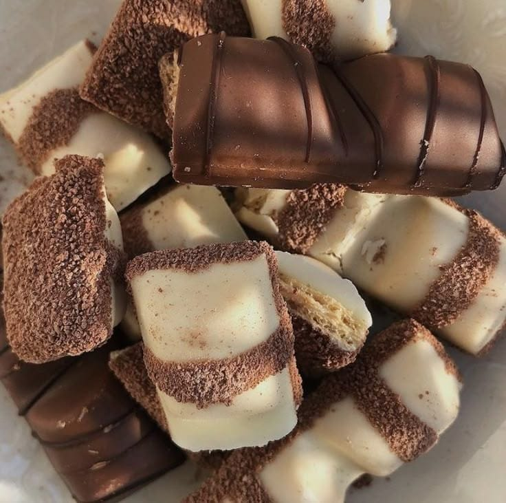
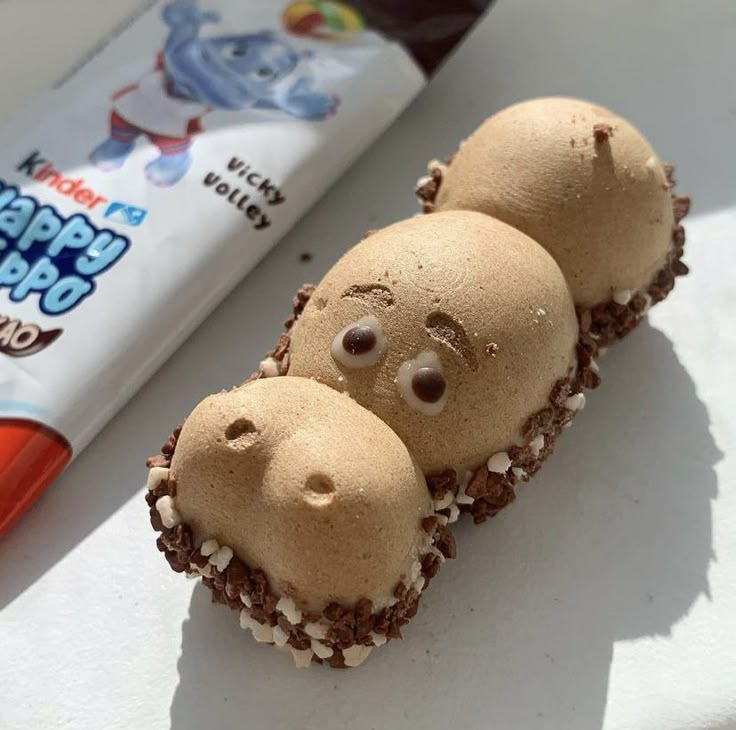
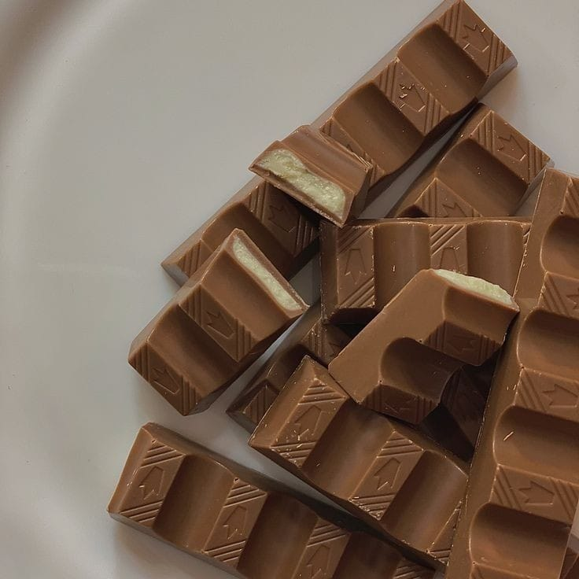
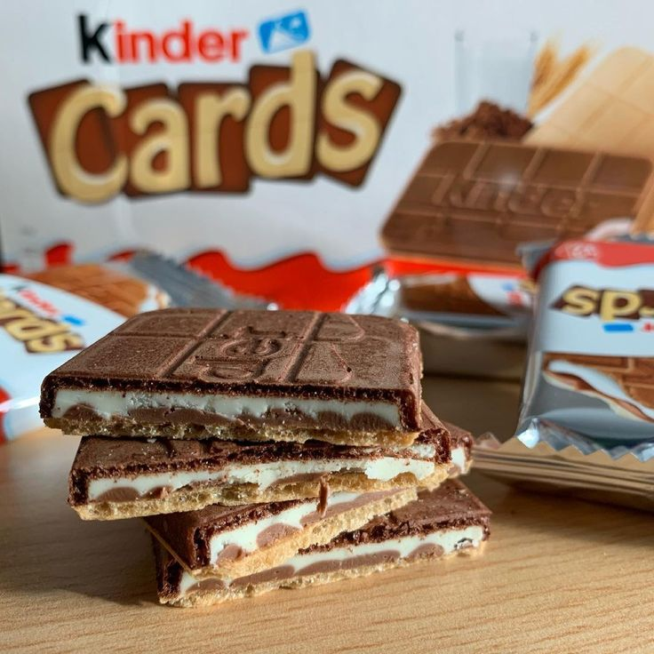
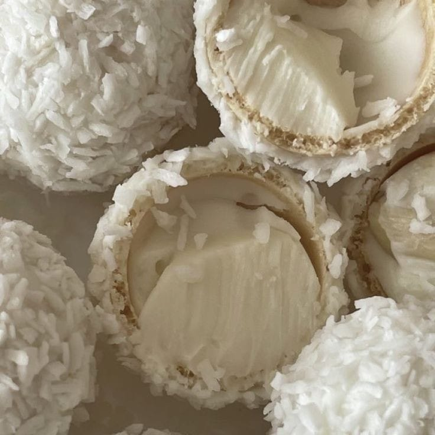
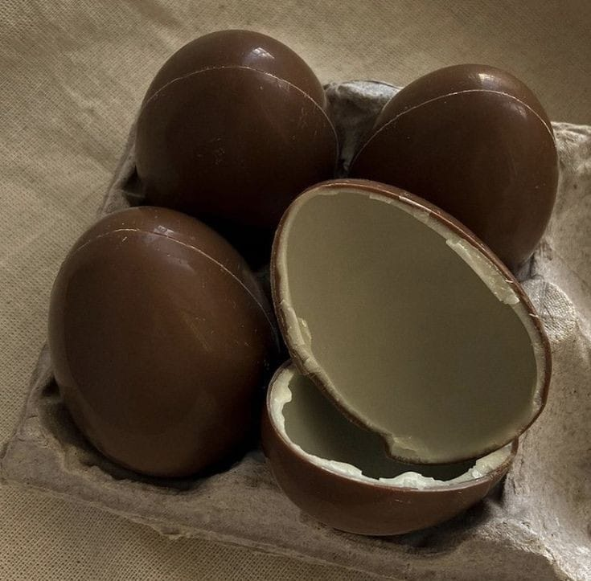
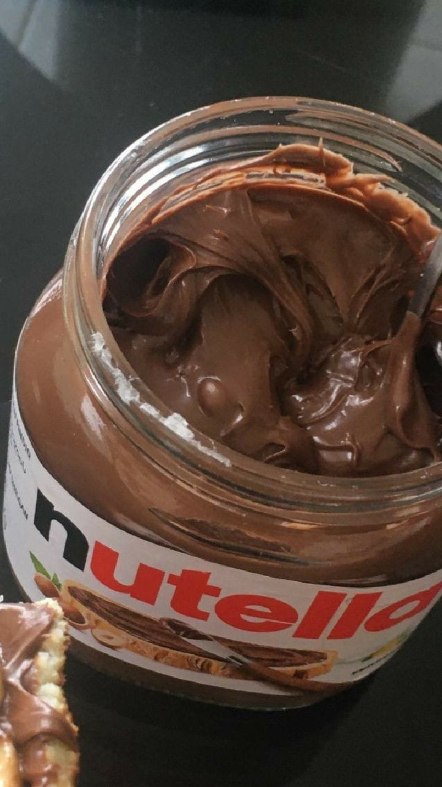
 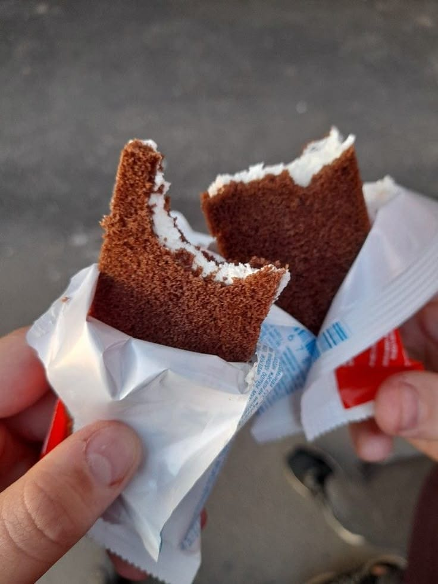
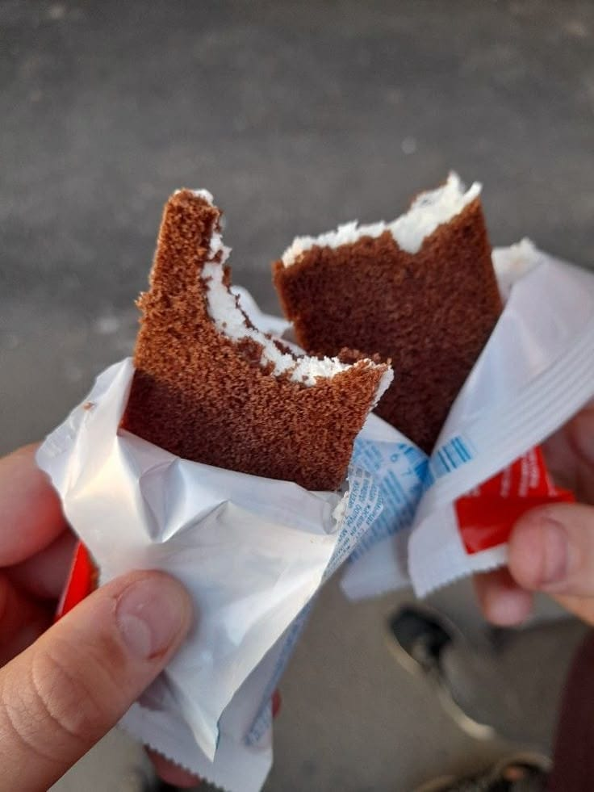
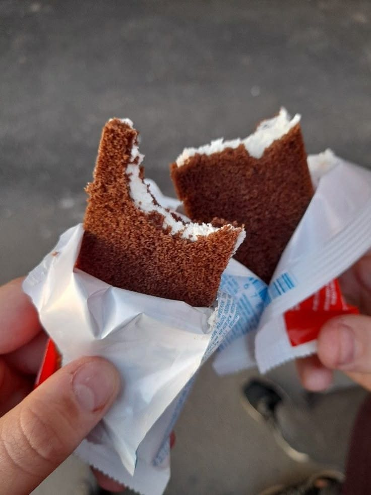
"Dove il gusto incontra la responsabilità:
benvenuti nel mondo Ferrero."
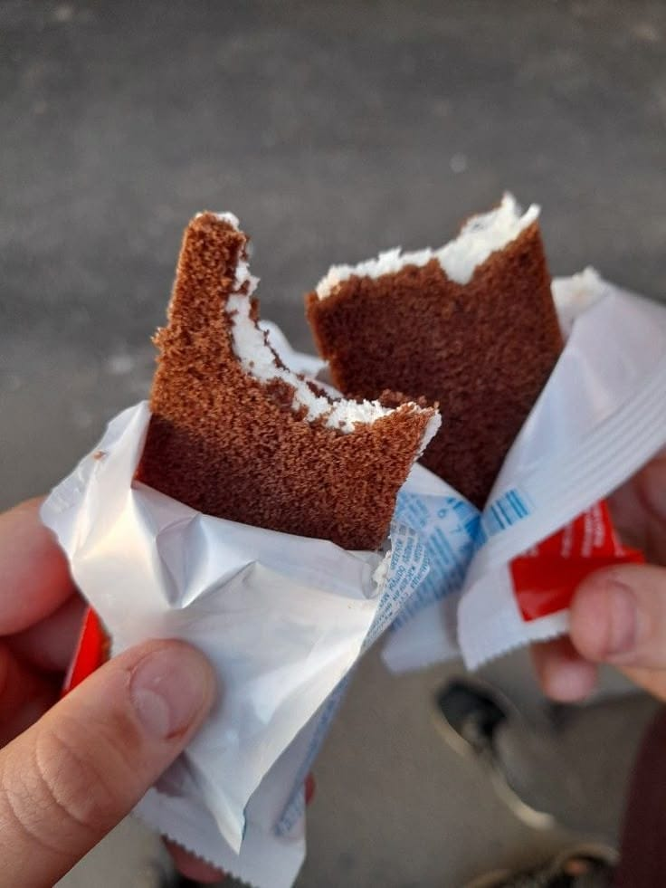
Storia
Oltre 70 anni di eccellenza nel settore dolciario.
Sostenibilità
Impegno concreto per un mondo più verde.
Qualità
Ingredienti selezionati e lavorazione artigianale.